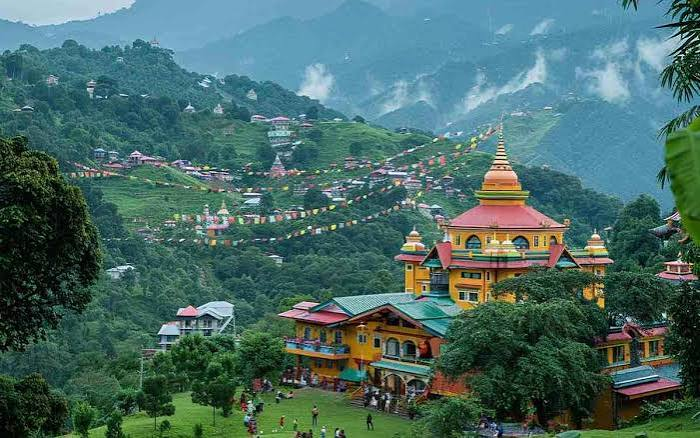
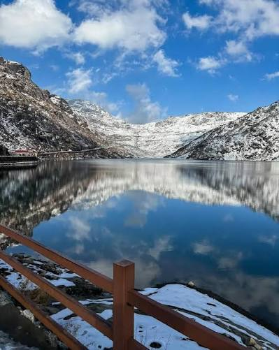
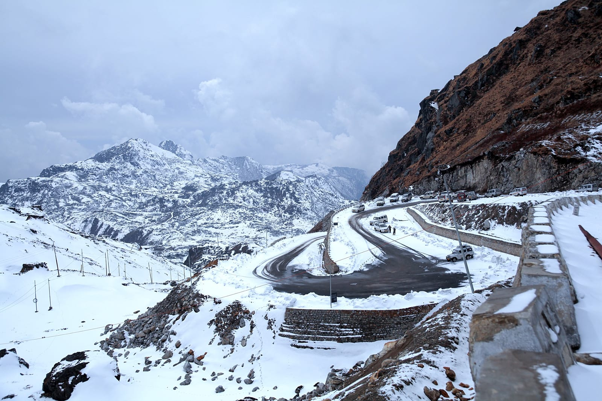
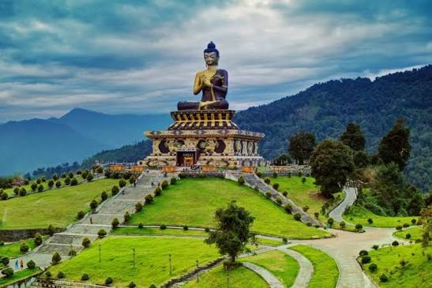
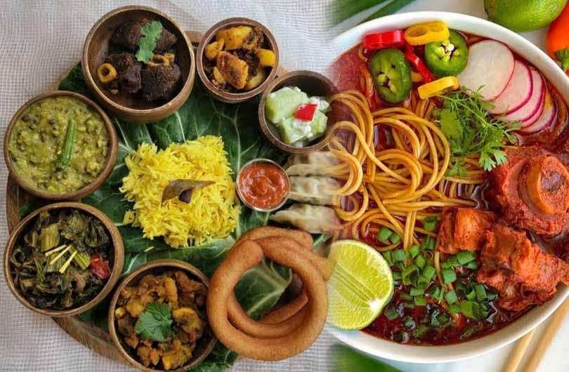

01
Gangtok
The scenic capital city — famous for pedestrian MG Marg, cable car rides, Rumtek Monastery, and panoramic mountain viewpoints.

Discover breathtaking Himalayan peaks, sacred high-altitude lakes, serene Buddhist monasteries, and the organic wonderland of Sikkim.
Explore Sikkim ↓Nestled in the Eastern Himalayas beneath Mount Kanchenjunga, Sikkim is India's first 100% organic state, celebrated for alpine biodiversity, fluttering prayer flags, and peaceful Buddhist culture.
From the lively ridge streets of Gangtok and glacial waters of Tsomgo Lake to the historic Indo-China border pass of Nathula and ancient chortens of Pelling, Sikkim offers pure Himalayan wonder.
Top Himalayan mountain passes, glacial lakes, and heritage towns in Sikkim.

The scenic capital city — famous for pedestrian MG Marg, cable car rides, Rumtek Monastery, and panoramic mountain viewpoints.

A sacred high-altitude glacial lake at 3,753 meters reflecting snow-capped peaks, alpine flowers, and yak rides.

An iconic historic Silk Route border pass at 4,310 meters on the Indo-China frontier, surrounded by dramatic snowfields.

A peaceful mountain retreat famous for up-close vistas of Mount Kanchenjunga, Pemayangtse Monastery, and Rabdentse Ruins.
Sikkimese cuisine unites Lepcha, Bhutia, and Nepali food traditions — emphasizing fermented vegetables, warm noodle broths, steamed dumplings, and organic hill produce.

Spiritual centers of Tibetan Buddhism like Rumtek, Enchey, and Pemayangtse preserving sacred murals and thangka scrolls.
Sacred festivals marked by traditional Cham masked lama dances, temple trumpet rituals, and reverence for Kanchenjunga.
Melodious Nepali and Bhutia folk songs, Maruni dances, and Lepcha musical instruments honoring nature spirits.
Intricate Tibetan hand-knotted wool carpets, hand-carved wooden Choktse tables, and handmade rice paper art.
Discover all 28 states, local food specialties, and centuries of living traditions.
← Back to All States